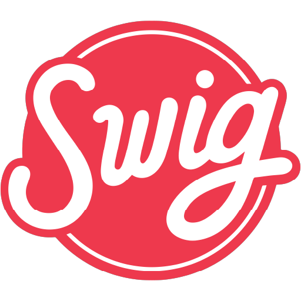

Resume
A summary of my experience, leadership, and achievements.
Education
Brigham Young University — Provo, Utah (2022–Present)
- BYU Marketing Team — Team Member
- Skills: ERP systems, Data Security & Privacy, Database Modeling, SQL, Project Management, Excel Automation (VBA), Tableau, Web Development (HTML & CSS)
Brighton High School — Cottonwood Heights, Utah (2018–2022)
- Scholastic Excellence Award — U.S. Marine Corps
- Academic All-American Athlete
- Swim Team Captain
- Seminary Council Member
- Student Advisory Council & Peer Mentor
Experience

General Manager — Swig (Orem) | Aug 2025 – Jan 2026
- Oversaw full business operations with P&L accountability for a high-volume retail location.
- Expanded workforce by 25–30% and built the most leadership-stable unit in the region.
- Reduced line times by 33%, achieving top 10 in the company and top 5 in the state, through workflow optimization.
- Managed labor strategy, scheduling, payroll, and profitability controls.
- Worked one on one with team members with goal setting, action plans, and when applicable terminations.
- Screened 300+ resumes, led interviews, and executed structured onboarding programs.
- Held KPI reviews, performance evaluations, and development sessions for team leads.
- Collaborated with regional leadership on marketing, financial planning, and operations strategy.
- Team leader for Guinness World Record: Most drinks served in one hour (4,500).
Youth Counselor — For the Strength of Youth | May 2025 – Aug 2025
- Led groups of 40+ youth using English and Spanish in high-intensity leadership programs.
- Delivered workshops, team-building exercises, and motivational training.
- Oversaw logistics, scheduling, safety, and event coordination.
- Certified in youth protection and leadership ethics.
- Partnered with 60+ staff members to run complex multi-day programs.
Shift Lead — Swig (Cottonwood Heights & Provo) | 2022–2023, 2025
- Served 200+ customers per shift with consistent speed and accuracy.
- Memorized 50+ custom drink combinations.
- Handled cash and resolved customer escalations.

Nelson Estate Maintenance — Midway, UT | 2016–2022
- Maintained 4.5-acre property and performed weekly grounds care.
- Repaired commercial lawn equipment and supported remodeling projects.

Christmas in Color — Draper, UT | 2021
- Installed thousands of Christmas lights during intensive setup shifts.
Leadership & Service
Missionary — Newport Beach California Mission (2023–2025)
- Trainer, District Leader, Zone Leader.
- Led councils, trained large groups, and mentored missionaries individually.
- Studied and spoke Spanish daily across multiple dialect regions.
Achievements & Interests
- Brighton High School 4×100 Freestyle Relay Record Holder
- Scholastic & Leadership Excellence Award — U.S. Marines
- Certificate in Spanish Translation & Communication
- Guinness World Record team leader
- Eagle Scout
- Hobbies: woodworking, music production, blacksmithing, ballroom dance, weightlifting